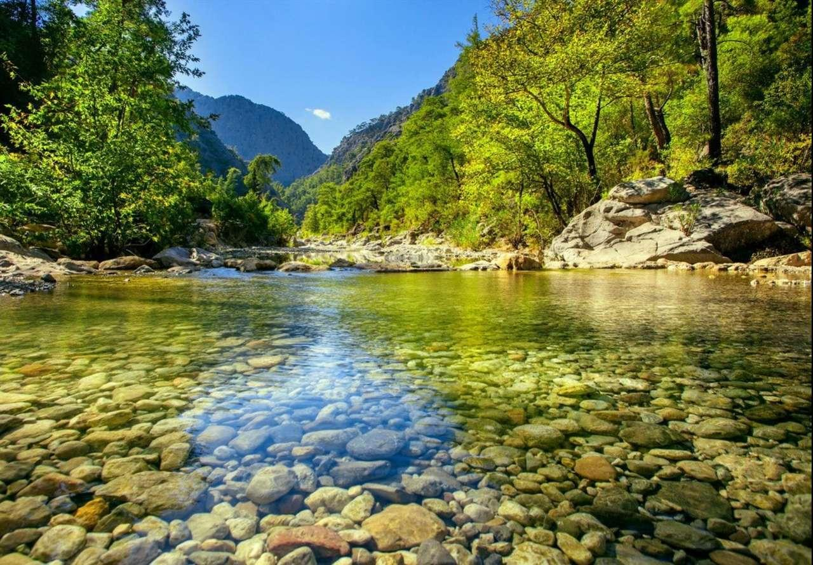
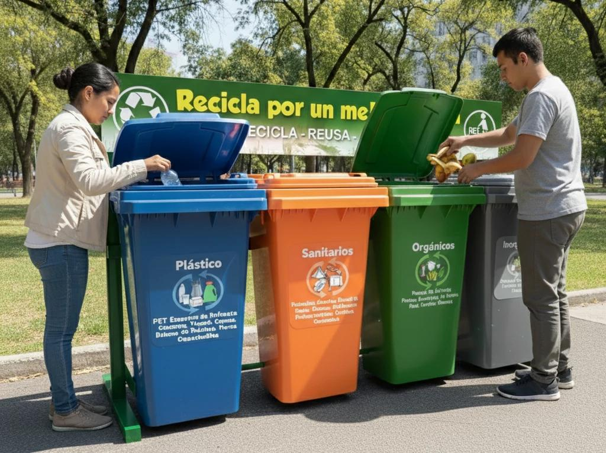
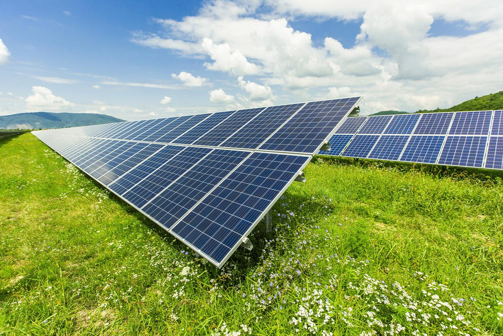

Misión
Promover el desarrollo sustentable mediante el aprovechamiento responsable de los recursos naturales y la educación ambiental.
Transformemos Tepic en una ciudad más verde, responsable y sostenible.
Conoce nuestro proyectoTrabajamos por un Tepic más sustentable, mediante la educación y la responsabilidad ambiental.
Promover el desarrollo sustentable mediante el aprovechamiento responsable de los recursos naturales y la educación ambiental.
Impulsar una comunidad comprometida con el medio ambiente, la innovación y la economía circular.
Protegemos los recursos naturales para garantizar el bienestar de las generaciones presentes y futuras.
Está formado por factores bióticos, como las plantas, animales y microorganismos, y factores abióticos, como el agua, aire, suelo y luz solar. Estos elementos interactúan para mantener el equilibrio de los ecosistemas.
Promovemos el ahorro de agua, la reparación de fugas y la prevención de la contaminación de ríos y cuerpos de agua.
Fomentamos la conservación de la flora y fauna, la reforestación con especies nativas y la protección de los espacios naturales.
Impulsamos la separación de residuos, el reciclaje y la reducción del consumo de productos desechables.
Una ciudad sustentable también debe ser justa, inclusiva y accesible para todos sus habitantes.
Promovemos el acceso equitativo al agua, la energía, la educación y los servicios básicos, sin discriminación.
Proponemos campañas de limpieza, reforestación y colaboración entre estudiantes, habitantes e instituciones.
Impulsamos talleres y actividades educativas para desarrollar una cultura de respeto hacia el medio ambiente.
Un modelo económico que busca aprovechar los recursos, reducir los residuos y prolongar la vida útil de los productos.
Fabricar productos duraderos, utilizando menos recursos y materiales reciclables.
Impulsar el comercio local y reducir el impacto ambiental del transporte.
Reparar, actualizar y reutilizar productos en lugar de reemplazarlos innecesariamente.
Selecciona un producto y descubre qué hacer con él.
La tecnología y el aprovechamiento responsable de la energía permiten mejorar la calidad de vida y reducir el impacto ambiental.
La implementación de paneles solares, sistemas de monitoreo y dispositivos eficientes puede contribuir a reducir el consumo de recursos y el impacto ambiental de la ciudad.
Calcula el consumo mensual de un dispositivo eléctrico.
Tepic Circular busca contribuir a los Objetivos de Desarrollo Sostenible de la Agenda 2030 mediante acciones ambientales y sociales.
Promover el ahorro energético y el uso de fuentes de energía renovables.
Impulsar una ciudad más limpia, inclusiva y responsable.
Reducir los residuos mediante el reciclaje, la reparación y la reutilización.
Fomentar acciones que contribuyan a combatir el cambio climático.
Identifica las acciones que realizas diariamente para contribuir al cuidado del medio ambiente.
0% completado
Pequeñas acciones pueden contribuir a transformar nuestra comunidad.



Fuentes oficiales de consulta sobre desarrollo sustentable y responsabilidad ambiental.
Objetivos de Desarrollo Sostenible.
Consultar fuentePrevención y gestión integral de los residuos.
Consultar fuenteConsejos de ahorro de energía en la vivienda.
Consultar fuente